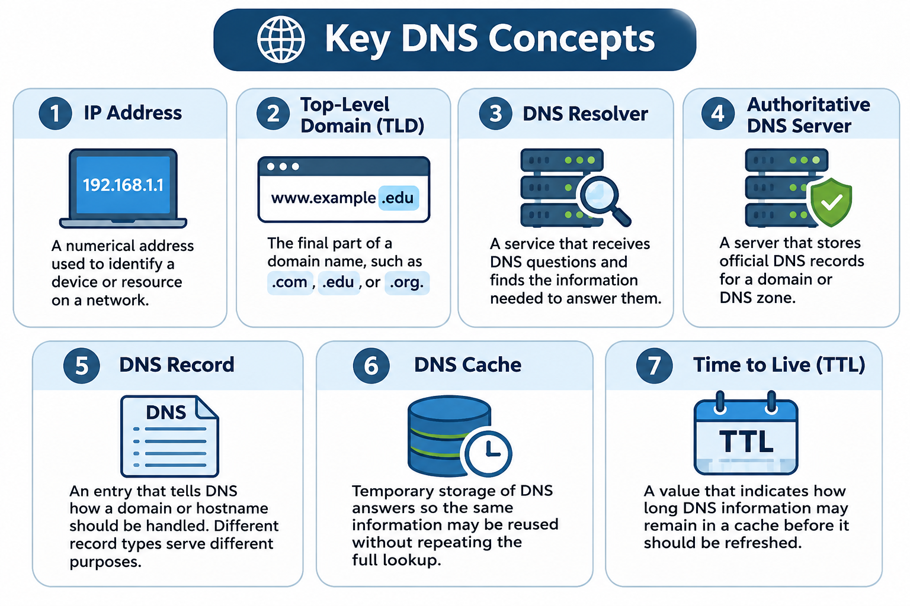

Study Guide
Key Concepts
These terms are useful for understanding how domain names are connected to internet services.

1. IP address
A numerical address used to identify a device or resource on a network.
2. Top-level domain (TLD)
The final part of a domain name, such as .com, .edu, or .org.
3. DNS resolver
A service that receives DNS questions and finds the information needed to answer them.
4. Authoritative DNS server
A server that stores official DNS records for a domain or DNS zone.
5. DNS record
An entry that tells DNS how a domain or hostname should be handled. Different record types serve different purposes.
6. DNS cache
Temporary storage of DNS answers so the same information may be reused without repeating the full lookup.
7. Time to Live (TTL)
A value that indicates how long DNS information may remain in a cache before it should be refreshed.
Quick review
DNS records provide the information, resolvers look up the information, and caching can help later lookups finish faster.